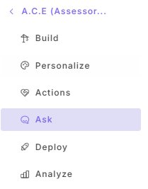
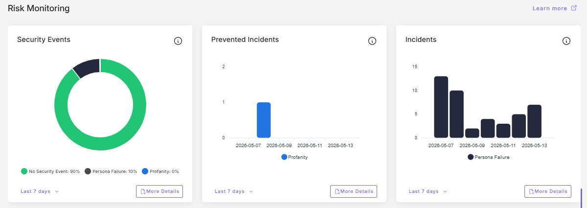

Daily Chatbot Operations Check
Purpose
This SOP outlines the standardized daily review of A.C.E. chatbot operations to ensure that user questions are being answered correctly, that emerging knowledge gaps are identified within one business day, and that operational issues are detected before they escalate.
Scope
This procedure applies to all staff with operational responsibility for the A.C.E. chatbot, including:
- AI Project Lead (primary owner)
- Backup operator (when designated)
- Any staff member temporarily covering A.C.E. operations
This SOP covers the daily morning review only. Weekly conversation review, monthly metrics, and incident response are covered in separate SOPs (AIO02, AIO04, AIO05).
Definitions
- A.C.E.
- Assessor's Community Educator. The bilingual AI chatbot deployed by the Bernalillo County Assessor's Office to answer public questions about assessment, exemptions, and related topics.
- CustomGPT.ai
- The third-party platform that hosts and serves the A.C.E. agent (project 9262).
- KB
- Knowledge Base. The collection of source documents and content that A.C.E. queries when answering user questions.
- Persona
- The system-level instructions that define A.C.E.'s identity, rules, boundaries, and tone. Found under Personalize → Persona in CustomGPT.ai.
- Missing Content
- A telemetry panel inside CustomGPT.ai that records user questions A.C.E. could not answer from its KB.
- Canary query
- A fixed test question with a known correct answer, used to detect persona drift or KB regression after changes.
- PII
- Personally Identifiable Information.
Overview
Related Documents
- CustomGPT.ai Dashboard: app.customgpt.ai
- Bernalillo County Assessor: bernco.gov/assessor
- A.C.E. public access: bernco.gov/assessor (chatbot widget)
Governing Policies
- Bernalillo County Assessor's Office AI Policy v2.0 (internal).
- Bernalillo County Ordinance 2026-1, codified at Code of Conduct Sec. 2-140 (AI governance).
- NM Const. Art. X §2 (constitutional independence of elected county officers). NMOneSource
Daily Review
1Open the Analyze Tab
Sign in to CustomGPT.ai. Open the A.C.E. agent.
In the left sidebar, click Analyze. The Analyze view defaults to the Overview tab.

2Triage Missing Content
Locate the Latest Missing Content panel. Read each new entry since yesterday.
For each entry, write down one of the following tags:
- Fix it — in-scope, A.C.E. should be able to answer this. Will become a KB entry (see AIO05).
- Send elsewhere — the topic belongs to another department (e.g., open permits → Planning).
- Skip — noise, test query, or abusive content.

3Check the Content Source Ratio
On the same screen, review the Content Source donut chart.
- Found should be at or above 85%.
- Not found should be below 15%.
If Not found exceeds 15% on the day, note it for follow-up. A single day above threshold is informational. A trend across multiple days is operational.
4Skim the Top 5 Latest Prompts
Read the top five prompts on the Latest Prompts panel. Watch for any of the following:
- Sensitive or emotionally charged content (e.g., death, grief, financial hardship).
- Threats, abuse, or hostile language directed at staff or the office.
- PII visible in the prompt itself.
- Politically charged questions (especially tax-bill season).
Any of these warrants a log entry and, depending on severity, escalation under AIO05.
5Review Risk Monitoring
Click the Customer Intelligence tab. Scroll to the Risk Monitoring panels.
Compare today's Incidents bar to the prior six days. If today is roughly in line with the rest of the week, continue. If today is noticeably elevated, investigate the same day per AIO05 Type A.
Note the current Persona Failure %, Profanity %, and any Security Events.

6Check the Main Dashboard
Return to the main Dashboard (top of left sidebar).
Scan the Monthly Usage tiles. Note any tile rendered with a red border. The most common red-border condition is Words Processed approaching or exceeding the plan cap before the monthly reset.
If a tile is red, log the date. Persistent red across multiple billing cycles indicates the plan needs upsizing rather than a workaround.

7End-of-Day Wrap
Before leaving for the day:
- Fix or schedule each "Fix it" item from step 2.
- Save flagged prompts and incidents to the weekly review folder.
- If any item required immediate notification per the table below, confirm it was sent.
Immediate Notification Triggers
Any of the following conditions requires same-day notification by email:
- A Latest Prompt contains PII that A.C.E. produced or exposed.
- A Latest Prompt contains a threat against staff or the office.
- Persona Failure incidents for the day are clearly elevated above the 7-day pattern.
- Words Processed is at the plan cap and the user-facing service is degraded.
- The agent is unreachable from the public site.
For agent-down or PII conditions, follow AIO05 (Incident Response) in addition to notification.
Daily Chatbot Operations Check
The seven steps
Triage tags
- Fix it
- In-scope, needs KB entry (use AIO05).
- Send elsewhere
- Belongs to another department.
- Skip
- Noise, test, or abuse.
Top 5 — escalation signals
- Sensitive content
- Hostile or threatening
- PII-containing
- Politically charged